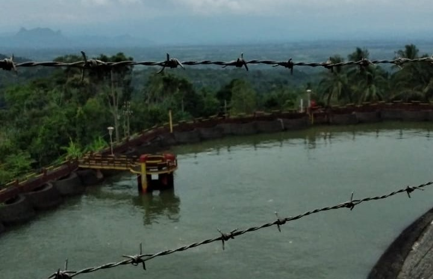
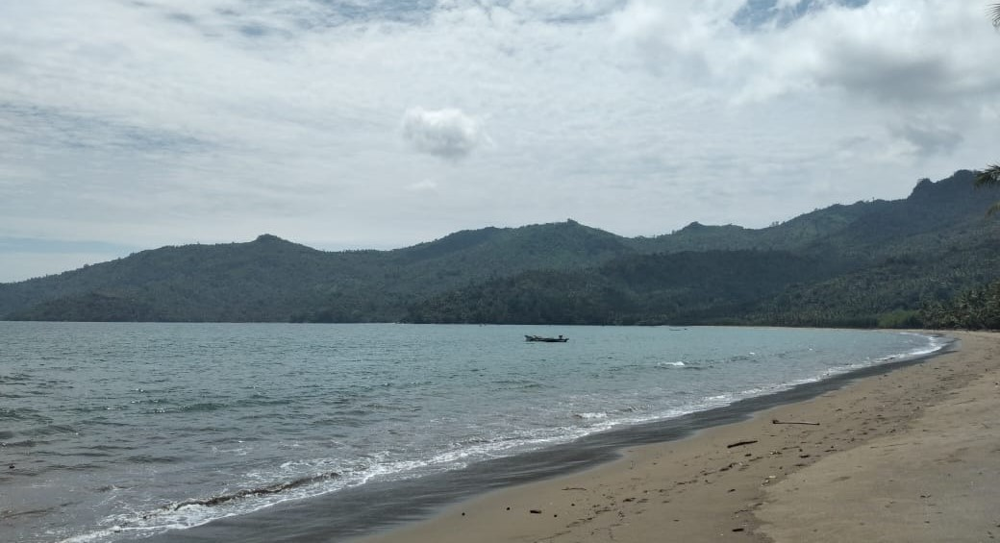

Tanjung Benoa
(2019)

Tanjung Benoa berada pada Kabupaten Badung, Bali. Pertama kali kesini, membuat saya merasakan segarnya daerah wisata yang berada di tengah kota. Perjalanan kurang lebih 30 menit dari Hotel. Saya juga tidak lupa untuk mengunjungi Pulau Penyu.

Butuh waktu sekitar 30 menit kesana dengan menggunakan perahu boat. Perairan Laut sedikit dangkal, jadi saya bisa melihat ikan kecil-kecil yang ada disana. Banyak kapal-kapal yang ditinggalkan begitu saja di perairan, entah karena apa saya juga tidak bertanya. Kalau kesini apalagi saat terik dan kemarau diharap membawa topi maupun memakai sunscreen karena panasnya ultraviolet.
Telaga Ngebel
(2021)
Telaga Ngebel berada pada Kabupaten Ponorogo, Jawa Timur. Jarak tempuh menggunakan motor kurang-lebih 45 menit dari rumah saya. Disini sejuk sekali karena ya memang telaga berada ditengah (dikelilingi) oleh gunung-gunung. Banyak sekali warung-warung maupun tempat penginapan yang ada disini. Menu yang menjadi highlight disini yaitu ikan bakar dan saya yakin rasanya sangat nikmat.
Sebelum sampai ke Telaga Ngebel, para pengunjung pasti melewati sebuah PLTA yang berada di Desa Wagir Lor. Banyak sekali pengunjung yang berhenti sejenak untuk menikmati dinginnya udara disambi dengan suara air dari PLTA. Dapat juga berfoto-foto untuk bisa dijadikan kenangan.
Pantai Damas
(2019)
Pantai Damas berada pada Kabupaten Trenggalek, Jawa Timur. Jarak tempuh bisa menghabiskan 3 jam dari kota saya. Disini masih dibilang natural sekali tempatnya. Pantainya juga tidak panas, dan tidak ada sampah. Tempatnya sangat sejuk untuk ukuran pantai. Karena, kemungkinan pantai ini belum terjamah manusia, jadi saat tiba dilokasi memang tidak banyak pengunjung. Jalanannya pun juga mulus, melewati perbukitan, gunung, lalu persawahan dan rumah-rumah penduduk.
Ombak laut juga tidak terlalu besar, maka dari itu kalau mau main agak ketengah pantai masih bagus tapi jangan lupa untuk hati-hati. Kalau kesini lebih baik bawa bekal sendiri, karena masih belum banyak warung-warung yang ada dipinggiran pantai. Terdapat banyak sekali gazebo yang bisa digunakan untuk duduk sejenak, maupun istirahat untuk menikmati keindahan pantai.